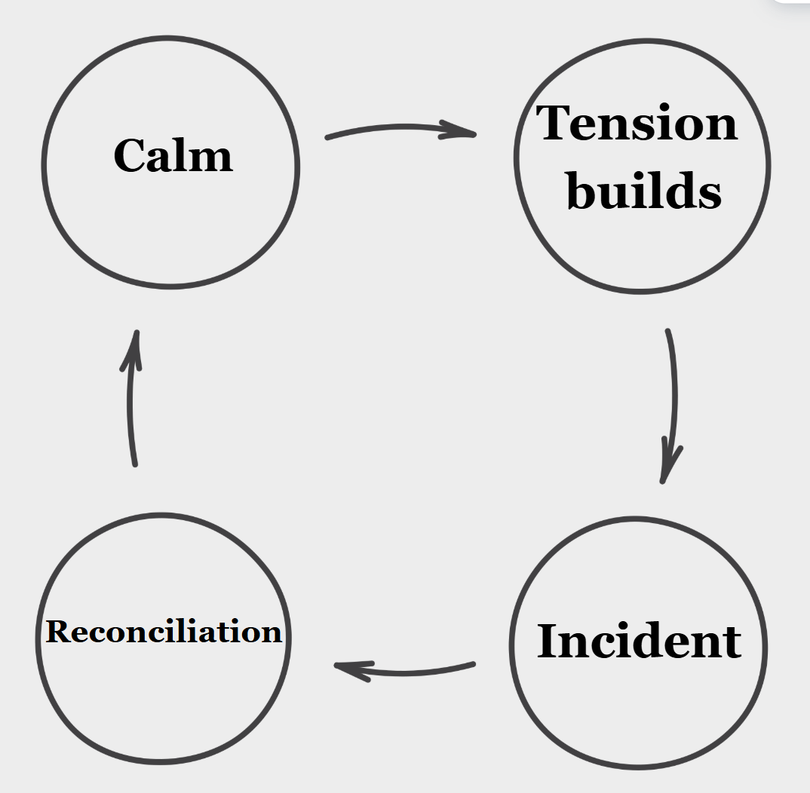

This page discusses cycles of abuse, including emotional harm and manipulation. Some readers may find this content upsetting.
If you are currently in an unsafe situation, please reach out for support through a trusted adult or a helpline.
Emotional abuse is when someone behaves or speaks in a way that intends to control, put down, frighten or isolate somebody else, causing to feel hurt.
The other modules cover some specific examples of emotional abuse. The purpose of this one is to answer questions like 'How does emotional abuse start?' and 'What keeps people trapped in emotional abuse?'.
Because the answer isn't as simple as a choice.
Every friendship has its ups and downs, but when things start to feel like a rollercoaster it might be time to take a closer look.
The experience of emotional abuse or an extremely unhealthy relationship can be divided into 4 stages, as highlighted in Lenore E. Walker's social cycle theory.

Tension builds: You feel like you’re walking on eggshells, things are very strange, something feels off.
Incident : Something bigger happens that causes you to feel upset or hurt. Maybe you were shouted at, maybe you were excluded from a big event, maybe something nasty was said to you.
Reconciliation: Maybe there’s a an apology, maybe you’ve started to distance yourself but they give you a compliment to draw you back in again.
Calm: Things seem fine again. But that doesn’t last long before the cycle repeats.
What separates a healthy relationship from an unhealthy relationship is the fact that the level of pain felt will be less, and apologies will be genuine.
Example Scenarios
For each scenario, try to figure out which part of the cycle is being experienced.
Question goes here
You may find that not only does the other person operate from an abuse cycle, but your emotions cycle as well. You go from feeling nervous to upset to hopeful on loop, and this can leave you feeling very confused. You have to remember that it is not your fault.
This is not to say people know and use this cycle on purpose, but it can often be how emotionally abusive dynamics play out.